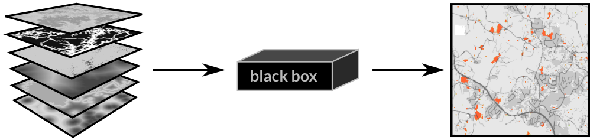
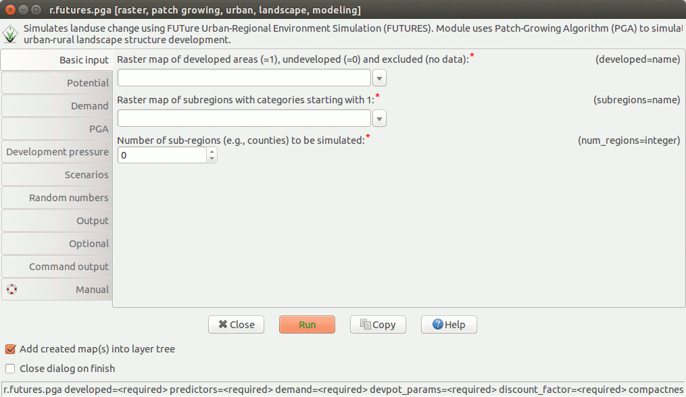
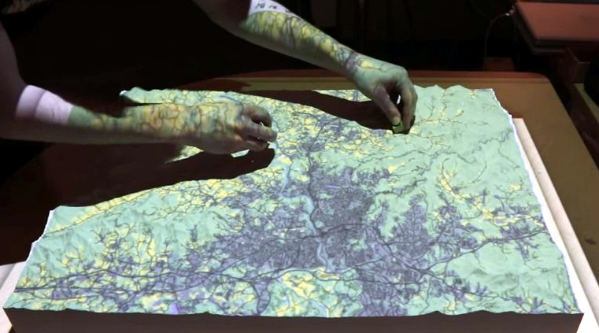

Creating Urbanization Scenarios with the FUTURES Model
Vaclav (Vashek) Petras, Anna Petrasova, Georgina M. Sanchez, Derek Van Berkel & Ross K. Meentemeyer
NCSU GeoForAll Lab
and
Landscape Dynamics Group
at the
Center for Geospatial Analytics,
North Carolina State University
NCGIS 2019 Winston-Salem
Feb 27 - Mar 1, 2019
Motivation
No Room for a Black Box
Can we understand the behavior of the model?Can we make sure it is working as described?

FUTURES
FUTure Urban-Regional
Environment Simulation
(Meentemeyer et al., 2013)
- stochastic, patch-based urban growth model
- accounts for location, quantity, and pattern of change
- positive feedbacks (new development attracts more development)
- allows spatial non-stationarity

FUTURES highlights
- realistic spatial pattern
- modular
- transparent (open source)
- available (open source including its dependencies)

FUTURES

POTENTIAL
- multilevel logistic regression for development suitability accounts for variation among subregions (for example policies in different counties)
- inputs are uncorrelated predictors (distance to roads and development, slope, ...)
DEMAND
- estimates the rate of per capita land consumption for each subregion
- extrapolates between historical changes in population and land conversion
- inputs are historical landuse, population data, population projection

PGA
- stochastic algorithm
- converts land in discrete patches
- inputs are patch characteristics (distribution of patch sizes and compactness) derived from historical data
Open source FUTURES
To go beyond experimental prototype we needed to make FUTURES:
- more efficient and scalable
- as easy to use as possible for a wider audience
- open source and maintainable in the long run
⇒ new FUTURES GRASS GIS add-on r.futures
Image credit: Open Science Logo v2, CC BY-SA 3.0 Greg Emmerich
Why GRASS GIS?
For model developers:
- modular architecture: modules in C/C++ and Python
- all needed GIS functions at hand
- efficient I/O libraries
- able to process large datasets
- automatically generated CLI and GUI
- infrastructure for online manual pages
- daily compiled binaries for Windows
(thanks to M. Landa, FCE CTU in Prague) - maintained by community and developers
Why GRASS GIS?
For model users:
- multiplatform
- graphical user interface
- scriptable (Bash, Python, R)
- easy installation from GUI or command line:
> g.extension r.futures - available suite of tools for further analyses and visualization (spatio-temporal analyses, animations)
r.futures

GUI
Graphical User Interface CLI
Command Line Interface
r.futures.pga -s subregions=counties developed=urban_2011 \
output=final demand=demand.csv discount_factor=0.1 compactness_mean=0.1 \
predictors=road_dens_perc,forest_smooth_perc,dist_to_water_km,dist_to_protected_km \
devpot_params=potential.csv development_pressure=devpressure_0_5 \
n_dev_neighbourhood=30 gamma=0.5 patch_sizes=patches.txt num_neighbors=4 output=final
TUI
Tangible User Interface Getting Started: Import Data Into GRASS GIS
Getting Started: Calibrate
Tutorials
- Tutorial for Triangle (Raleigh, Durham, Chapel Hill) on GRASS GIS Wiki
- Sample dataset for Triangle
- Workshop material for Asheville, NC on GRASS GIS Wiki
- r.futures manual pages
References
- Meentemeyer, R. K., Tang, W., Dorning, M. A., Vogler, J. B., Cunniffe, N. J. and Shoemaker, D. A., 2013. FUTURES: Multilevel Simulations of Emerging UrbanRural Landscape Structure Using a Stochastic Patch-Growing Algorithm. Annals of the Association of American Geographers 103(4), pp. 785–807.
- Dorning, M. A., Koch, J., Shoemaker, D. A. and Meentemeyer, R. K., 2015. Simulating urbanization scenarios reveals tradeoffs between conservation planning strategies. Landscape and Urban Planning 136, pp. 28–39.
- Pickard, B. R., Van Berkel, D., Petrasova, A. and Meentemeyer, R. K., in prep. Future patterns of urbanization reveal trade-offs among ecosystem services.
- Petrasova, A., Petras, V., Van Berkel, D., Harmon, B. A., Mitasova, H., and Meentemeyer, R. K., 2016. Open Source Approach to Urban Growth Simulation. Int. Arch. Photogramm. Remote Sens. Spatial Inf. Sci., XLI-B7, 953-959.

Slides: ncsu-landscape-dynamics.github.io/futures-talk